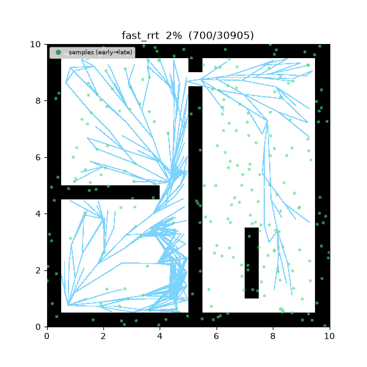
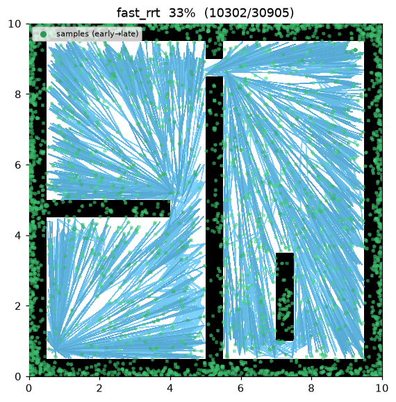
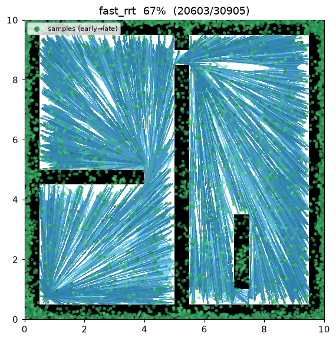
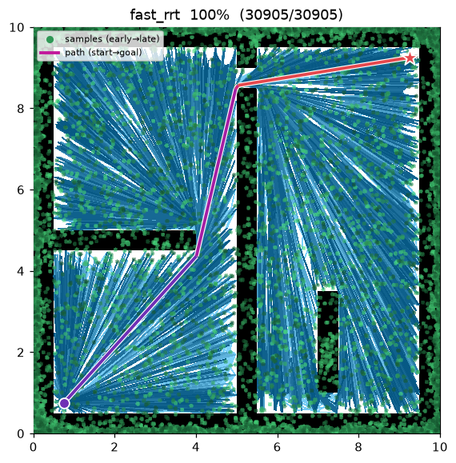
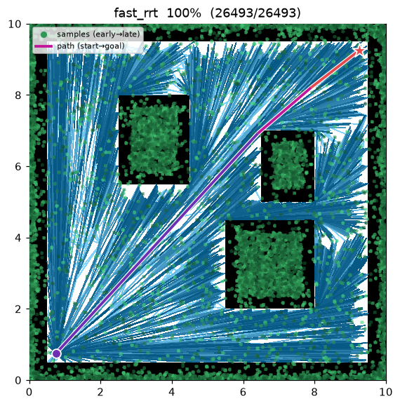

Fast-RRT¶
| 항목 | 내용 |
|---|---|
| 분류 | sampling-based, single-query, anytime |
| 요구 capability | SamplingSpace |
| 완전성 | probabilistically complete |
| 최적성 | near-optimal — RRT* 대비 빠른 수렴을 노린 개량 |
| 원 논문 | Wu, Meng, Zhao & Wu (2021) 1 |
배경¶
Fast-RRT1 는 RRT/RRT 의 두 가지 실용적 약점 — (1) 이미 탐색한 영역에도 계속 샘플이 낭비되어 초기 해 발견이 느리고 분산이 크다, (2) RRT 의 최적 수렴이 느리다 — 를 겨냥한 2021 년 개량이다. 논문은 Improved-RRT (빠르고 안정적인 초기 해 탐색)와 Fast-Optimal (초기 해들을 융합해 준최적 경로 생성)의 2 모듈 구조를 제안하고, RRT* 대비 한 자릿수 이상 빠른 최적 경로 탐색을 보고한다1.
이 저장소의 구현은 논문의 핵심 아이디어를 RRT* 스타일 트리 위에 얹은 형태다:
- Fast-Sampling — 기존 트리 노드에서
reached_radius안에 떨어진 샘플은 "이미 도달한 공간"으로 보고 기각한다. 샘플링이 미탐색 공간에 집중되어 탐색 시간 분산이 준다1. - Random Steering — 샘플 방향 직선 확장이 장애물에 막히면, 무작위 방향으로 최대
steering_attempts회 재시도해 첫 collision-free 한 걸음을 취한다. 좁은 통로 통과율이 올라간다1. - Fast-Optimal (shortcut) — feasible 경로가 생기면 삼각 부등식 기반 shortcut pruning 으로 경유점을 걷어낸다: waypoint 를 우회하는 선분이 collision-free 면 제거. RRT* 처럼 anytime 으로 best 경로를 유지한다.
동작 원리¶
FAST_RRT(start, goal):
T ← {start}
for i in 1..max_iterations:
repeat: # Fast-Sampling
x_rand ← (goal with prob. goal_bias) else sample()
until min_{x ∈ T} distance(x, x_rand) > reached_radius (or goal sample)
x_near ← nearest(T, x_rand)
x_new ← steer(x_near, x_rand, step_size)
if blocked(x_near → x_new): # Random Steering
for k in 1..steering_attempts:
x_new ← x_near + step_size · random_direction()
if is_motion_valid(x_near, x_new): break
insert with choose-parent; rewire neighbors # RRT* 골격
if x_new reaches goal:
path ← SHORTCUT(path through x_new) # Fast-Optimal
best ← min(best, path)
return best
SHORTCUT(path): # 삼각 부등식 pruning
for each waypoint w in path:
if is_motion_valid(prev(w), next(w)): remove w
return path
성질¶
- 완전성: probabilistically complete. Fast-Sampling 의 기각은 도달 공간에 한정되므로 미탐색 공간의 커버리지는 유지된다.
- 최적성: 형식적 asymptotic optimality 증명은 없다 (RRT 골격 + shortcut 이므로 실측 수렴은 RRT 와 동급이거나 빠르다). 논문 성격상 near-optimal 로 분류한다1.
- 경로 형태: shortcut 때문에 최종 경로의 waypoint 수가 극단적으로 적다 — 아래 demo 에서 8,000 샘플 트리에서 최종 경로는 5 개 점이다.
파라미터¶
| 이름 | 타입 | 기본값 | 범위 | 설명 |
|---|---|---|---|---|
max_iterations |
int | 8000 | [1, 200000] | 반복 예산 (anytime) |
step_size |
float | 0.5 | [0.01, 100.0] | steer 확장 거리 η (m) |
goal_bias |
float | 0.05 | [0.0, 1.0] | goal 을 직접 sample 할 확률 |
goal_tolerance |
float | 0.3 | [0.0, 100.0] | goal 도달 판정 반경 (m) |
neighbor_radius |
float | 1.5 | [0.01, 100.0] | rewire 근방 반경 (m) |
reached_radius |
float | 0.4 | [0.0, 100.0] | Fast-Sampling 기각 반경 (m) 1 |
steering_attempts |
int | 10 | [1, 100] | Random Steering 재시도 횟수 1 |
seed |
int | 1 | [0, 2^31−1] | 난수 시드 (재현성) |
근거: Fast-Sampling · Shortcut 단조성¶
Fast-Sampling 수용 규칙. 샘플 \(x_{rand}\) 는
일 때만 수용된다. 즉 샘플링 공간을 \(X_{\text{free}}\setminus\bigcup_{x\in T}B(x,r_{\text{reached}})\) 로 제한해 확률측도를 미도달 영역에 집중시킨다 — 초기 해 탐색 시간의 분산이 준다.
Shortcut 의 비용 단조성 (삼각 부등식). 연속 경유점 \(p_{i-1},p_i,p_{i+1}\) 에서 선분 \(\overline{p_{i-1}p_{i+1}}\subset X_{\text{free}}\) 이면 \(p_i\) 제거에 따른 비용 변화는
로 삼각 부등식에 의해 항상 비증가다. 따라서 수용되는 모든 shortcut 은 경로 비용을 절대 늘리지 않으며, 고정점까지 반복하면 국소적으로 팽팽한(taut) 경로가 된다.
최적성. 바탕 트리는 RRT*-스타일(choose-parent + rewire)이므로 RRT* 의 점근적 최적성이 유지되고, Fast-Sampling·Random-Steering 은 그 보장을 해치지 않으면서 초기 해 도달 시간과 분산만 줄인다 (Wu et al. 2021).
구현 노트¶
- C++:
cpp/src/global_planning/fast_rrt.cpp, Python:python/nav_study/global_planning/fast_rrt.py - choose-parent / rewire 는 RRT* 와 공통 유틸을 공유한다 — 논문의 기여분 (Fast-Sampling / Random Steering / shortcut)만 이 클래스에 있다.
- Fast-Sampling 기각 검사 때문에 트리가 조밀해질수록 반복당 비용이 커진다 — 같은 8,000 반복에서 RRT* 보다 트리가 크고( ~7,970 vs ~5,915 노드) 느린 이유다.
방출 trace 이벤트¶
planning_started → (sample_drawn, edge_added, rewire) → path_found* → planning_finished
Demo¶
maze01 — Fast-Sampling 덕에 트리가 빈 공간을 고르게 채우고, 최종 경로(빨강)는 shortcut 으로
꼭짓점 몇 개만 남은 긴 직선 선분들이다.

탐색 중간 과정 (좌 → 우: 초반 / 중반 / 최종 경로):
 |
 |
 |
open01 최종 결과 — 경로가 4 점 폴리라인으로 준다:

측정치 (seed = 1, 8000 iterations, trace on):
| map | 언어 | path cost | path waypoints | 참고: RRT* cost |
|---|---|---|---|---|
| maze01 | Python | 13.467 | 5 | 13.458 (18 wp) |
| maze01 | C++ | 13.544 | 4 | 13.471 |
| open01 | Python | 12.048 | 4 | 12.047 (14 wp) |
| open01 | C++ | 12.049 | 4 | 12.048 |
경로 비용은 RRT* 와 동급이지만 waypoint 가 1/3 이하로 줄어 후처리(smoothing) 없이도 추종하기 좋은 형태가 된다.
재현:
python python/demos/demo_fast_rrt.py \
--map maps/grid/maze01.yaml --scenario maps/scenarios/maze01_s1.yaml \
--params configs/global_planning/fast_rrt.yaml --trace out/fast_rrt.jsonl
python tools/viz/replay.py out/fast_rrt.jsonl --gif out/fast_rrt.gif
References¶
-
Wu, Z., Meng, Z., Zhao, W., & Wu, Z. (2021). "Fast-RRT: A RRT-Based Optimal Path Finding Method." Applied Sciences, 11(24), 11777. doi:10.3390/app112411777 · PDF (open access) ↩↩↩↩↩↩↩↩